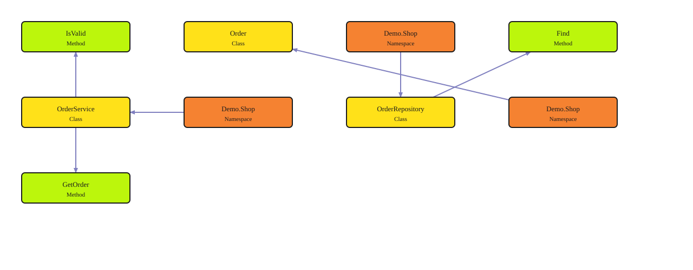

Your first code graph
Go from three source files to a graph you can query and share. Try a small order service, inspect a real result, then bring the same workflow to your own code.

This preview uses the SVG from the unmodified engine export. The full report includes its coverage, snapshot information and legend. Everything on this page works from a downloaded folder.
Before you start
Install the prebuilt Axiom runtime and open a terminal with axge on PATH. The convenience runner uses Python 3.10 or later. You do not need Rust, Cargo, .NET or an application build.
Save this example directory with its source, solution.json and run_demo.py files. Use a local disk for the run.
1. Run the example
From this directory, choose a new output folder:
python run_demo.py --out demo-run
Use python3 on macOS/Linux when appropriate. The runner copies the sample source, selects a private home, previews registration, then builds, queries and exports. Your normal registrations and installed runtime stay untouched.
Built demo-shop: 9 nodes, 6 edges. Open …/demo-run/html/result.html
Open that file in your browser. Prefer to run each native command yourself? Follow the manual walkthrough; it needs no Python runner.
2. Inspect the source and query
The example has three classes: Order, OrderRepository and OrderService. Query a known declaration after registration and build:
axge query context --solution demo-shop --symbol Demo.Shop.OrderService --json
The runner already executes this query with explicit bounds.
3. Export and share
axge export --solution demo-shop --out graph-html --format html --json
Export reads the published snapshot and checks its manifests and shards. It does not rebuild source. Open graph-html/result.html, or omit --format html to export structured JSON.
| Included result | Use it to |
|---|---|
| result.html | Open the full diagram in a browser, without a server |
| summary.json | Inspect diagram counts and coverage |
| graph.json | Read nodes, edges and snapshot metadata |
| Export receipt | Verify artifact names, sizes, checksums and generation vector |
The captured native run verified the known symbol, unchanged source, artifact checksums and refusal to overwrite an existing export. Inspect all captured results.
Keep going
- Add a method in the run's copied workspace and build again.
- Run
axge watchin that same home to refresh as you save. - Register your own repository with the same preview → apply → build workflow.